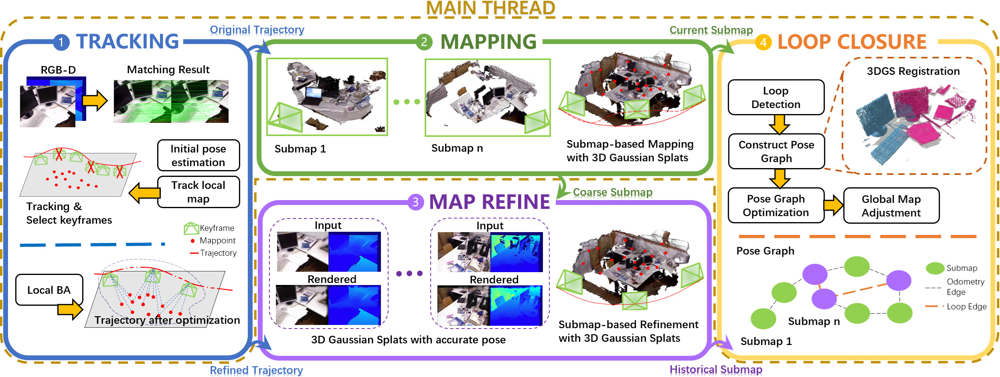
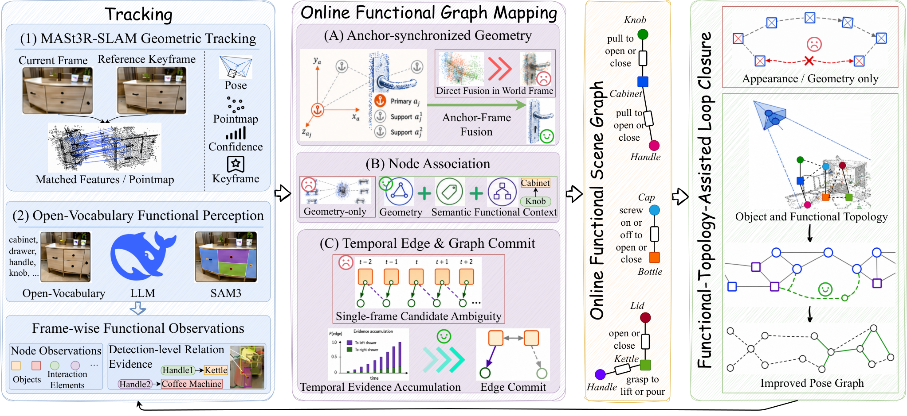
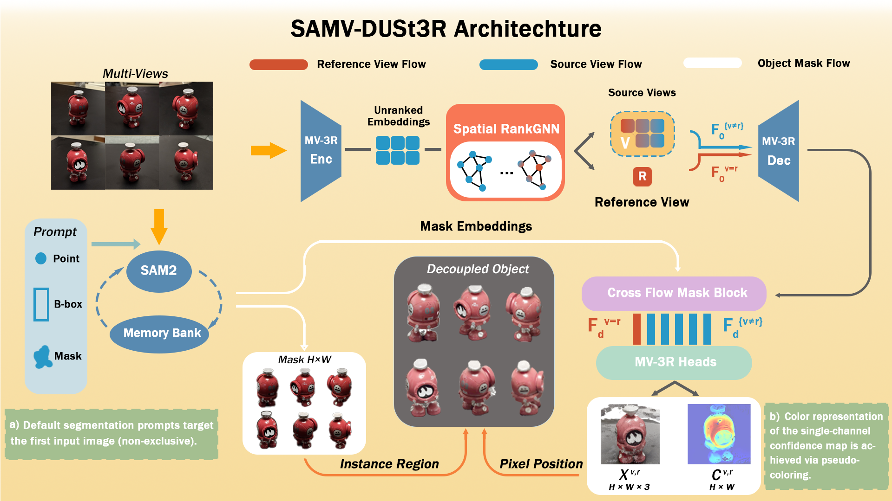
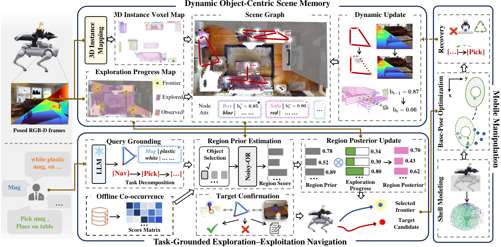

Executive Summary
SLAM 的竞争目标正在从轨迹误差扩展到“地图能否支撑后续决策”。 LightSplat 用残差自适应回环把稀疏跟踪、Gaussian 子图和全局一致性接起来；Functional-SLAM 则直接把功能关系稳定性引入节点关联与回环候选。前者在 TUM RGB-D 平均 ATE 略优于 LoopSplat，但 ScanNet 平均 ATE 反而更差，说明速度/表征收益仍不能替代场景级鲁棒性。
显式不确定性与失败反馈，开始成为导航世界模型的“一等公民”。 Occupancy 诊断显示补全并非越多越好：假占用与漏占用对 active mapping 的影响非单调，按多次观测无支持来可逆过滤，在两个针对性起点分别带来 +0.163 与 +0.122 最终覆盖率；OmniNav 也用持续性后验和失败后的信念更新处理动态物体。
FeedForward 3D 正在把“参考视图选择、传感器模型、下游可用性”纳入主干。 SAMV-DUSt3R 用语义 mask 与图排序选参考视图；OmniPoint 解耦 ray/distance 适配多种相机；SHIFT 则说明结构化压缩能显著加速 TSDF，但端到端收益和几何误差必须单独核算。
Deep-read Papers
| 论文 | 系统/框架图 | 解决的问题 | 方法 / 结构 | Insight 与数学知识 | 实验与效果 | 复现与启发 | 阅读证据 |
|---|---|---|---|---|---|---|---|
| LightSplat 3DGS-SLAM回环 |
 Fig.2：稀疏跟踪、Gaussian 子图、残差自适应回环与全局校正。 |
兼顾 RGB-D 3DGS-SLAM 的实时跟踪、稠密渲染和回环后的全局一致性。 | SuperPoint/LightGlue + RANSAC/Huber 的稀疏前端；双线程 Gaussian 子图；NetVLAD 候选、PnP 几何验证、按联合残差决定是否跳过光度细化；加权旋转平均和位姿图后刚性更新 Gaussian 均值/协方差。 | 局部 BA 固定最老关键帧消除规范自由度；渲染损失联合颜色、深度与各向同性正则。核心 insight 是让回环计算量由当前残差决定，而非每次完整优化。 | TUM RGB-D 平均 ATE 3.33 cm（LoopSplat 3.46）；ScanNet 平均 9.6 cm（LoopSplat 7.7，未领先）。fr1/desk 完整系统 6.7 FPS、2.02 cm ATE，LoopSplat 0.7 FPS、2.26 cm。 | RTX 4080；TUM/ScanNet/Replica/Habitat 与真机。值得迁移的是“残差触发的精修”；风险是子图配准开销、无全局 BA、受限视角 floaters 与内存增长。 | 全文：Intro、Method、Experiments、Ablation、Conclusion/Limitations；系统 Fig.2 已下载并目视核验。 |
| Functional-SLAM 功能图开放词汇 |
 Fig.1：在线功能图构建、时序稳定化与功能拓扑回环。 |
传统 SLAM 地图几何正确但缺少“物体能做什么、彼此如何关联”的任务语义。 | MASt3R-SLAM 跟踪；RAM++/DeepSeek/SAM3 开放词汇感知；在线功能图 Gt=(U,O,R)；anchor-keyframe 几何；节点匹配融合几何、语义、功能上下文；功能拓扑候选再做几何验证。 | 关系证据用时序后验累积，避免单帧 VLM 抖动；视角质量 Qview 采用字典序选择；回环同时使用图相似度 SG 与功能关系保持分数 SFT。 | FunGraph3D 完整系统 ATE 16.5，node R@3/10 64.55/67.14，triplet R@5/10 41.10/43.84；去掉功能回环后 ATE 19.7、triplet 35.96/38.36。在线 0.38 FPS，离线对比方法 0.02–0.06 FPS。 | 公开代码但依赖 gated SAM3、DeepSeek API、多个权重与数据集。启发是把“关系一致性”作为回环和数据关联信号，而非仅作为可视化层。 | 全文五部分；Fig.1 已目视核验；另对公开 repo 做文件级深查。 |
| Diagnosing and Dynamically Filtering Occupancy World Models for Active Mapping world modelactive mapping |
未收录：论文图为诊断示例/结果图，不符合“仅系统框架图”规则。 | 拆解 learned occupancy completion 中 false positive/false negative 对主动建图规划的真实作用，并寻找在线修正机制。 | 固定 MAGICIAN planner，仅替换 occupancy 条件：无补全、learned、移除 FP、补回 FN、GT；再以多次视锥曝光却无 RGB-D 表面支持为证据，K=2、ε=场景直径 0.03，动态且可逆地压制假占用。 | 规划器通过预测 occupancy 计算 expected coverage gain 和碰撞；最终覆盖 CT、归一化 coverage AUC、达到 70% 的 S70 共同刻画。关键结论是地图误差对规划器的影响是非单调的。 | 5 场景×5 起点×101 poses。pooled learned CT=.846、AUC=.644、S70=31.6；GT +.031/+ .086/−12.7。动态过滤在 Pantheon/2、Sestino/2 分别 +.163、+.122 最终覆盖。 | 过滤实验仅两个刻意挑选起点、每个 3 次，属于 preliminary。可优先验证“可逆负证据”是否能迁移到 occupancy/scene-memory 导航。 | 全文 Intro、diagnostic design、metrics、results、dynamic filter、limitations；无合格系统图。 |
| SAMV-DUSt3R FeedForward 3D语义 |
 Fig.1：SAM2 mask、Spatial RankGNN、Cross Flow Mask Block 与点图输出。 |
多视图前馈重建对参考视图敏感，且纯外观 token 难以保持跨视图对象结构。 | MV-DUSt3R 主干叠加 SAM2 mask embedding；Spatial RankGNN 做参考视图排序；Cross Flow Mask Block 在跨视图特征中注入语义；输出 pointmap/confidence/mask，以 Masked Confidence Loss 训练。 | RankGNN 的全局多头消息传递复杂度 O(LN²)；语义 mask 作为软结构先验。论文把“参考视图选择”从外部启发式变成可学习子任务。 | 排序准确率 73.5%。DTU 12 views：ND 6.2、DAc 6.8、CD 1.9、Acc 5.5、Comp 5.8；24 views：6.1/6.9/1.7/4.7/4.9（按论文表中缩放）。NVS 并非所有设置领先。 | 未找到可核验代码。NVS 仅以 target point cloud 初始化 3DGS，而评测图含背景，暴露几何指标与渲染指标的任务错位。 | 全文五部分与表格；Fig.1 已目视核验；代码可用性仅搜索级证据。 |
| OmniNav 动态导航移动操作 |
 Fig.1：动态场景记忆、探索—利用、可达性操作与恢复。 |
在动态家庭场景中处理物体移动、未成功搜索、移动底盘对齐与抓取失败，而非一次性静态 ObjectNav。 | 3D voxel map + scene graph 的对象中心记忆；任务驱动探索—利用；搜索失败后更新信念；可达性约束的闭环操作与恢复。对象持续性是两状态 Markov/Bayesian 模型，观测分为支持、空、遮挡。 | 后验可写为 P(M,T,F|Y,Q) 的因子化；当实例 belief 低于阈值才删除。把“没看到”区分为可证伪的空观测与不可证伪的遮挡。 | MP3D full SR .473/SPL .180；去 progress .412/.154，去动态感知恢复 .426/.155。60 次真机 pick-place 成功率 71.7%，改造 OK-Robot 53.3%；三级难度 85/75/55% 对 80/55/25%。 | Unitree Go2 + ARX X5 + LiDAR/RGB-D，onboard RTX 3090，使用 GPT-4o API。仅 3 个动态场景、每场景 3 次；未找到匹配公开 repo。 | 全文 Intro、framework、belief update、sim/real experiments、ablation、limitations；Fig.1 已目视核验。 |
| SHIFT TSDF/ESDFCPU |
未收录：Fig.1 为文内 TikZ/概念图，未得到可独立核验的原始系统图资产。 | 让有组织 RGB-D/LiDAR 的 TSDF/ESDF 更新在 CPU 上更快、更省内存，同时保留可用于规划的距离场。 | range image 分 flat/edge/curved；共面像素聚合为 weighted super-rays；非投影 TSDF；flat voxel 在 W≥5 且有梯度时冻结，若新距离差 <1 cm 跳过；紧凑 ESDF 布局，建立于 Voxfield。 | super-ray 以残差权重投影到平面后求加权均值并累加权重；结构压缩减少重复 ray marching，但平面化会引入偏差。 | 4 个数据集，TSDF 加速 1.42–4.07×，内存最高降 28%。Newer College TSDF 1.76×，但端到端仅 1.12×（40 cm）。Flat mesh error 1.75→1.94 cm。 | 单线程 Ryzen 9700X、无 GPU。未设计 residual-motion unfreeze，动态物体可能被过早冻结；未找到公开代码。 | 全文五部分、公式/伪代码、4 数据集表、消融/限制；无合格可下载系统图。 |
{kind=link}
{kind=link}
{kind=link}
{kind=link}
Repo Deep Dives
| Repo | 目标与能力 | 代码结构证据 | 依赖 / 硬件 | 成熟度判断 | 领域关系 |
|---|---|---|---|---|---|
| Functional-SLAM-CoRL_2026 34★ / 1 fork / 0 open issue；latest f0426fa；无 release |
论文官方实现：MASt3R-SLAM + 在线开放词汇功能图 + 功能拓扑回环，输出轨迹、PLY 和在线功能图 JSON。 | main.py、config/*.yaml；mast3r_slam/functional_graph/online_state.py（10,678 行，关联/anchor/DBSCAN/posterior）、graph_commit.py（tentative/committed edge）、node_track.py、local_posterior.py、remote_posterior.py、node_place_recognition.py。检查了 README、完整 tree、98 行评测配置和最新提交。 |
Ubuntu、Python 3.11、PyTorch 2.5.1、CUDA 12.4、RTX 3090；SAM3 gated 权重/HF login、MASt3R/RAM++ 权重、Functional-SLAM 数据、DeepSeek API。 | 代码面广且含 vendored 第三方模块，复现门槛高；无 release，最新提交仅 README 链接修订。静态代码证据，不代表运行成功。 | 核心 SLAM：语义/功能层直接进入数据关联与回环，而非离线后处理。 |
| Tri-DehazeGS 8★ / 2 forks / 0 open issue；latest a9ca200；无 release |
将 clean Gaussian scene 与 view-shared triplane medium 分解；先联合分解，再冻结 medium 进行 MD-TGC。 | train.py（304 行，两阶段训练编排）、scene/medium_renderer.py（134 行，ray_march_triplane_medium）、gaussian_renderer/、render_haze.py、run/{realx3d,fognerf,mipnerf360}.sh、CUDA rasterizer 子模块。检查 README、tree、入口/核心函数和唯一初始提交。 |
需要 CUDA/PyTorch、COLMAP 相机、images/depths/clean refs；默认 15k iterations。未下载数据、权重或编译扩展。 | 实现已公开但仓库只有初始提交、无 release；结果产物定义清楚（clean/hazy render、transmittance、β、airlight、residual、metrics JSON）。 | 相邻 3DGS：重点不是定位，而是恶劣介质下可解释场景/介质分解。 |
| FIRE3D 90★ / 6 forks / 0 open issue；latest 2368dd2；MIT；无 release |
单 RGB 或随手视频生成 simulation-ready、按对象分解的 6DoF/OBB/纹理网格，面向仿真重建。 | fire3d/cli.py（307 行，download/infer/sample/render）、runtime/model_loader.py（276 行）、models/scene_decoder_w_seg_voxelize.py（1,101 行）、tests/test_release_cli.py（223 行）；另含训练、benchmark、data processing、TRELLIS2/o-voxel/CuMesh。检查 README、tree、核心入口、测试和近期提交。 |
Linux、Python 3.10、CUDA 12.8、PyTorch 2.7.1、Blender 4.5.1；README 标注在 96 GB GPU 验证。模型与数据需另行下载。 | 三者中代码/测试/协议最完整，但环境昂贵且仍无 release；论文“under a minute”是作者结论，未在本机验证。 | FeedForward 3D 的下游化：输出从点图/高斯扩展为可交互仿真资产。 |
Quantitative Experiment Highlights
| 来源 | 数据集 / 场景 | 指标 | 结果 | 解释边界 |
|---|---|---|---|---|
| LightSplat | TUM RGB-D / ScanNet | 平均 ATE | TUM 3.33 cm vs LoopSplat 3.46；ScanNet 9.6 cm vs 7.7 | 不是跨数据集统一领先；必须同时呈现反例。 |
| LightSplat ablation | TUM fr1/desk | FPS / ATE / PSNR | pure VO 5.0 / 10.24 cm；+ sparse map 10.1 / 6.54；full 6.7 / 2.02 / 21.7 dB；LoopSplat 0.7 / 2.26 / 21.8 | 单序列消融；速度/轨迹改善明显，渲染质量近似。 |
| Functional-SLAM | FunGraph3D | ATE / node recall / triplet recall | full 16.5 / 64.55–67.14 / 41.10–43.84；w/o functional loop 19.7 / 61.74–64.32 / 35.96–38.36 | 关系图和回环联动，但绝对量纲以原文设置为准。 |
| Functional-SLAM | 在线处理 | FPS | 0.38；OpenFunGraph 0.02、FunGraph 0.06、KeySG 0.05 | 仍远低于视频帧率；“online”指增量处理范式。 |
| Occupancy diagnosis | 5 scenes × 5 starts | CT / AUC / S70 | learned .846/.644/31.6；GT 相对 +.031/+.086/−12.7 | 固定 planner，结论是模型—规划器耦合，不是纯 occupancy accuracy 排名。 |
| Dynamic occupancy filter | Pantheon/2；Sestino/2 | 最终覆盖率 | .309±.021→.472±.078；.836±.108→.958±.021 | 仅两个针对性起点、各 3 次；初步证据。 |
| SAMV-DUSt3R | DTU 12 / 24 views | ND / DAc / CD / Acc / Comp | 12：6.2/6.8/1.9/5.5/5.8；24：6.1/6.9/1.7/4.7/4.9 | 按论文表格缩放；不能跨表直接解释物理单位。 |
| SHIFT | Flat / Cow&Lady / TUM / Newer College | TSDF speed / memory / mesh error | 1.42–4.07×；最高 −28% memory；Flat 1.75→1.94 cm | Newer College 端到端仅 1.12×；压缩有误差代价。 |
| OmniNav | MP3D ObjectNav | SR / SPL | .473/.180；w/o progress .412/.154；w/o DA-RPA .426/.155 | 使用 VLM/API 与作者仿真栈。 |
| OmniNav | 60 次真机 pick-place | 成功率 | 71.7% vs OK-Robot* 53.3%；L1/L2/L3=85/75/55% vs 80/55/25% | 仅作者硬件与场景；未独立复现。 |
| OVMAN | 219 个 two-visit episodes | zero-shot / two-visit / oracle | 11.4% / 45.2% / 99.5%；former-object 0.000，removed-object .025 | 说明变化定位/实例 grounding 是主要瓶颈。 |
| RouteBridge | mip-NeRF360；DTU 3-view | PSNR / LPIPS | mip-NeRF360 30.33 dB、LPIPS .207；较 3DGS +1.56 dB；DTU 21.12 dB | 来自摘要；需后续全文核对逐场景和训练成本。 |
| AeroBelief | UAV-ON | SR / OSR / SPL | 21.61 / 35.57 / 10.62 | 摘要数字；尚未核验方差和基线设置。 |
| Programmable World Model | CombatStateBench | Count / State Accuracy | 94% / 98% | 程序状态 benchmark，不等于开放世界长期预测。 |
Supplemental Tracking Papers
| 论文 | 方向关系 | 解决的问题 | 方法 / 结构 | Insight 与数学知识 | 实验 | 证据级别与后续动作 |
|---|---|---|---|---|---|---|
| Visual-SLAM for hidden tomatoes | 核心 SLAM | 温室遮挡下番茄串定位/量测。 | ROS2 单目离线采集，HLoc 粗到细匹配 + GLOMAP SfM。 | 以重定位/SfM 处理高重复、遮挡农业场景。 | 真实番茄串与人工量测验证；摘要无数值。 | 摘要级；补读量测误差与失败例。 |
| FIRE3D | FeedForward 3D | 从单图/随手视频生成可仿真对象网格。 | 分对象的几何、6DoF/OBB、纹理与 PBR 流水线。 | 评价对象从视觉相似度转为 simulation-ready 资产。 | 作者称 under a minute、比优化式方案快数量级；摘要无精确表。 | 摘要 + repo 文件级深查；需跑公开协议。 |
| RoMa-Ω | 匹配 / FeedForward 3D | 3D foundation feature 后层零样本匹配差。 | 分析线性/全量适配，构建 VGGT-Ω backbone 的 RoMa。 | 差的 raw matching 不代表特征不可线性解码。 | WxBS mAA 比 RoMa v2 +8.1。 | 摘要级；补读跨模态/宽基线分项。 |
| Learning Global Camera Poses from Noisy View-Graphs | SfM | 从含噪相对位姿图恢复全局相机。 | 置换等变 edge-conditioned GNN，自监督相对一致性，再三角化 + robust BA。 | 以 view-graph 对称性约束学习式 pose averaging。 | 声称可扩展到 >1000 图像且更快/有竞争力；摘要无数值。 | 摘要级；需核验 gauge 处理和 BA 成本。 |
| OmniPoint | FeedForward 3D | 统一针孔、鱼眼、等距柱状相机点图预测。 | 解耦 ray 与 distance，双向增强，可注入 intrinsics/稀疏深度。 | 把成像模型显式化，比隐式让网络适配更可控。 | 声称多相机零样本 SOTA；摘要无数值。 | 摘要级；补读跨相机泛化表。 |
| AURORA | 主动重建 | CAD-free 物体位姿与 in-hand 重建。 | Ray-GPIS 方向不确定性、uncertainty-novelty NBV、旋转与融合。 | 沿观测 ray 建模方向性不确定性，驱动下一视角。 | 声称优于对比方法；摘要无数字。 | 摘要级；补读 NBV 消融和机器人失败率。 |
| EdMCGS | 动态 3DGS | 低帧率 RGB 下重建快速非刚体运动。 | event 驱动 Markov chain motion、控制点与局部等距约束。 | 事件提供时间导数，Markov 传播填补 RGB 间隙。 | 声称实时且更少 Gaussians；摘要无数值。 | 摘要级；代码公开，后续核验吞吐与显存。 |
| One MLLM, One Call (O2C-Nav) | VLN | 降低 embodied nav 每步多次大模型调用。 | 单次 MLLM 输出 RGB 上结构化 waypoint marker，FMM 做低层规划。 | 把高层语义决策和确定性可行路径分层。 | R2R-CE/RxR-CE 声称 SOTA；摘要无数值。 | 摘要级；公开 repo 仅 README，证据不足。 |
| OVMAN | 动态具身记忆 | 物体移走/移动后的 two-visit navigation。 | 219 episodes，分 former location、removed object、new location 等状态。 | 静态 ObjectNav 得分掩盖“变化 grounding”失效。 | zero-shot 11.4%，two-visit ref 45.2%，oracle 99.5%。 | 摘要 + 实验段落；补读数据许可/评测脚本。 |
| TANGO | 人形导航 | RGB+语言到 29DoF 全身动作。 | 仿真合成行为、全身 motion editing、RL tracking，零样本迁移 Unitree G1。 | 把导航与动作生成统一，而非 waypoint + controller 串接。 | 摘要无数字。 | 摘要级；补读 sim-to-real 与跌倒率。 |
| AirAnchor | 空中 VLN | 长航程中维持局部锚点和持久对象记忆。 | local anchors、persistent object memory、spatially informed agent。 | 稀疏可解释锚点可作为长时记忆索引。 | AerialVLN 上更好；摘要无数字。 | 摘要级；需全文查轨迹长度分层。 |
| Air-Ground Collaborative VLN（v3 修订） | 多机器人 VLN | UAV/UGV 共享语义与可行性。 | 共享 BEV map，CARLA-Air Town10HD 联合规划。 | 空地视角互补能降低单平台观测盲区。 | 100 episodes：joint success 77%，UAV 50%，Travel UAV 53%。 | 窗口内修订，不算新稿；补读通信/同步假设。 |
| AeroBelief | 无人机 ObjectNav | 大尺度搜索中的语义信念与证据冲突。 | intuition/evidence 双层图、evidence gating、object-conditioned VLM、quadtree guidance。 | 先验直觉与观测证据分层，避免过早锁定。 | UAV-ON SR 21.61、OSR 35.57、SPL 10.62。 | 摘要级；补读基线、置信区间。 |
| EvoNav-Bench | lifelong nav | ProcTHOR 环境持续变化下的长期导航。 | evolving benchmark；Frontier-Update、Fail-then-Update、Stage-Reset 启发式。 | 地图更新策略本身应成为评测变量。 | 摘要称现有方法 brittle；无数字。 | 摘要级；补读变化类型与 episode protocol。 |
| DCLP++ | 低数据移动规划 | 传感器距离不等于足迹安全距离。 | 以 footprint clearance 替代 sensor distance 的 curriculum/奖励变体。 | 几何可通行性应对机器人外形建模。 | 100 固定任务：选定种子 200k steps 后 42%→70%；motion variants 混合。 | 摘要级；预备结果，需多种子统计。 |
| Gaussian Context Distributions for VLM Traversability | 可通行性 | VLM prompt 不确定性难以进入稠密地图。 | 将语义 prompt 表示为 Gaussian context distribution，输出 traversability 与 uncertainty。 | 用分布而非点 prompt 传播语义歧义。 | GOOSE 上不确定性与歧义相关；摘要无数字。 | 摘要级；补读校准指标。 |
| Tri-DehazeGS | 3DGS / 恶劣介质 | 分离干净场景与跨视图共享雾介质。 | clean 3DGS + triplane medium；联合阶段后冻结介质并做 MD-TGC。 | 物理散射先验减少把雾烘焙进几何/颜色。 | 真实/合成 haze 均声称更好；摘要无数字。 | 摘要 + repo 深查；需跑公开数据。 |
| RouteBridge | NeRF / 3DGS | 按像素选择 NeRF 或 3DGS 的可靠预测。 | per-ray reliability routing：NeRF→3DGS、3DGS→NeRF 或 abstain。 | 组合器需要学会拒绝，而非总做平均。 | mip-NeRF360 30.33 dB、LPIPS .207；DTU 3-view 21.12 dB。 | 摘要级；补读 routing oracle 与额外成本。 |
| Recursive Code World Models | world model | 生成可编辑、可递归细化的 3D 场景程序。 | global-local-global solver；VLM coding agent 比较 render/reference 并递归修正。 | 程序是显式中间状态，可执行且可局部诊断。 | 声称胜过基线、递归越深越好；摘要无数字。 | 摘要级；需全文查计算预算和失败模式。 |
| Programmable World Model | world model | 让视觉预测遵循可编辑规则与离散状态。 | 程序状态/转移规则；3D OBB 状态编译为 pixel-aligned conditioning。 | 显式状态机约束生成视频中的数量和属性一致性。 | CombatStateBench Count 94%、State 98%。 | 摘要级；补读视觉质量与规则外泛化。 |
Trends & Insights
1. 地图从“表征”变成“带后验的决策状态”
Functional-SLAM 的关系后验、Occupancy Filter 的可逆负证据、OmniNav 的对象持续性 belief 都在回答同一问题：地图更新不能只追加观测，还要显式表示“当前相信什么、为什么改变、何时撤销”。对工程团队而言，比再叠一层语义标签更值得投入的是统一的证据生命周期。
2. 回环与恢复机制开始吸收高层信号
LightSplat 用联合残差决定回环精修成本，Functional-SLAM 用功能关系保持筛选候选，OmniNav 用失败触发探索/操作恢复。共同模式是：高层状态不是替代几何，而是决定何时、在哪里花昂贵的几何/模型计算。
3. FeedForward 3D 的瓶颈从“能否预测”转向“如何被系统消费”
SAMV-DUSt3R 关心参考视图，OmniPoint 关心相机模型，FIRE3D 关心可仿真网格，RouteBridge 关心逐 ray 路由。下一阶段的有效评测应加入相机域、内存/延迟、资产可编辑性和下游任务成功率，而不只点云/渲染指标。
4. 热闹但证据不足的方向
“单次大模型调用导航”“递归 coding-agent world model”“通用 simulation-ready 重建”概念吸引力强，但本期多数仅有摘要级数字、README 或高配环境说明；尚缺跨场景复现、成本曲线和失败分层。AGC-VLN 的 77% 联合成功率也来自单一仿真城市场景，应避免直接外推到真实空地协作。
Evidence & Reading Coverage
| 对象 | 实际阅读/检查覆盖 | 证据等级 | 不足 |
|---|---|---|---|
| LightSplat | arXiv HTML：Intro、Method、公式、Experiments、Ablation、Conclusion/Limitations；Fig.2 原图目视核验。 | 全文深读 | 未运行；无核验到公开代码。 |
| Functional-SLAM | 论文全文 + Fig.1；官方 repo README/tree/config/入口/6 个功能图核心文件/近期提交。 | 全文 + 代码静态深读 | SAM3 gated、API/权重/数据未获取，未运行。 |
| Occupancy active mapping | 论文全文、诊断条件、公式、全部关键表、动态过滤实验与限制。 | 全文深读 | 过滤仅 2 起点×3 repeats；未复现。 |
| SAMV-DUSt3R | 论文全文、Fig.1、DTU/NVS/排序实验与消融。 | 全文深读 | 未找到公开实现；表格缩放依原文。 |
| OmniNav | 论文全文、Fig.1、belief update、仿真/真机/消融/限制。 | 全文深读 | 未找到匹配 repo；GPT-4o API 依赖；真机样本有限。 |
| SHIFT | 论文全文、公式/伪代码、4 数据集与 ablation/limitations。 | 全文深读 | 未找到公开代码；未获得合格独立系统图。 |
| Tri-DehazeGS / FIRE3D | 摘要；GitHub README、完整 tree、配置/脚本、入口、核心模块、测试/近期提交；FIRE3D 模型页。 | 摘要 + 代码静态深读 | 未下载模型/数据，未编译或运行。 |
| 其余 18 个 supplemental 条目 | arXiv 摘要和元数据；OVMAN/AGC-VLN 补读实验数字。 | 摘要级/局部段落 | 未系统读全文，结论仅作方向跟踪。 |
| O2C-Nav-Code / ShapeGuidedGaussian / 同名 OmniNav 搜索 | 仓库元数据与 README/匹配性检查。 | 证据不足 | 前两者仅 README；OmniNav 同名结果非论文实现，未误计为代码证据。 |
值得跟进事项
- 优先复验 LightSplat 的跨数据集反差：同一硬件上同时报告 TUM/ScanNet ATE、回环触发比例、子图数量、显存与全局修正耗时。
- 把可逆负证据接入现有 occupancy/scene-memory：先做小规模 A/B，记录 false free-space、碰撞、覆盖 AUC 与恢复次数，而非只看 IoU。
- 审计 Functional-SLAM 的功能回环：在不调用 DeepSeek/SAM3 的 oracle-label 设置下隔离高层关系本身的收益，避免把感知模型能力混入 SLAM 结论。
- 为 FeedForward 3D 增设系统指标：参考视图稳定性、非针孔相机零样本、下游 3DGS 初始化、资产碰撞/可编辑性和单位显存吞吐。
- 暂缓把 FIRE3D/OmniNav 当即插即用方案：先确认 96 GB GPU、GPT-4o/API、Blender/CUDA 版本和数据/权重许可是否满足内部复现约束。
原始链接列表
- LightSplat
- Functional-SLAM
- Occupancy World Models for Active Mapping
- SAMV-DUSt3R
- OmniNav
- SHIFT
- Visual-SLAM for hidden tomatoes
- FIRE3D
- RoMa-Ω
- Learning Global Camera Poses
- OmniPoint
- AURORA
- EdMCGS
- O2C-Nav
- OVMAN
- TANGO
- AirAnchor
- Air-Ground Collaborative VLN
- AeroBelief
- EvoNav-Bench
- DCLP++
- Gaussian Context Distributions
- Tri-DehazeGS
- RouteBridge
- Recursive Code World Models
- Programmable World Model
- Functional-SLAM repo
- Tri-DehazeGS repo
- FIRE3D repo
- FIRE3D model page